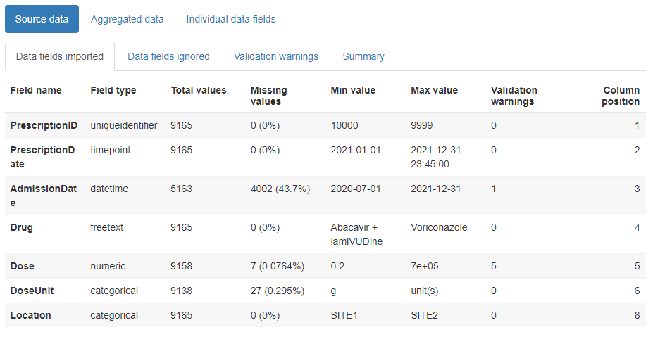

This vignette demonstrates how to use this package to generate an html report that allows you to quickly review any changes in a temporal dataset’s values over time.
Data format
Data must be in tabular format, as a data frame. Each row should represent a single “event” such as a visit to hospital or a medical test result or a drug prescription. One column must contain the “event date” (aka “timepoint”) for the row, with further columns containing any associated values for the event, such as the type of visit, or the name of the medical test, or the quantity of the drug prescribed.
In order for the package to detect any non-conformant values in
numeric or datetime fields, these should be present in the data frame in
their raw character format. A function called read_data()
is supplied to assist with this, and will read rectangular data from a
text file automatically as character type.
Dates are expected to be in the format YYYY-MM-DD or
YYYY-MM-DD HH:MM:SS, though a range of other date formats
can also be accepted (see later). User-specified locales are not
currently supported.
Example:
The example_prescriptions dataset is provided with this
package as a csv file, and contains (synthetic) examples of antibiotic
prescriptions given in a hospital over a period of a year, with one row
per prescription. It contains 8 columns:
- PrescriptionID - the uniqueidentifier for the row
- PrescriptionDate - The date the prescription was given
- AdmissionDate - The date the patient was admitted to the hospital
- Drug - The name of the antibiotic prescribed
- Dose - The size of the dose prescribed
- DoseUnit - The units for the dose prescribed
- PatientID - A unique identifier for the patient
- Location - The location of the patient
There are some missing values which are represented by the string
‘NULL’. String values that should be treated as missing values can be
specified when the data is processed, using the na
parameter.
# first, attach the package if you haven't already
library(daiquiri)
# this is where the example file is located
path <- system.file("extdata", "example_prescriptions.csv", package = "daiquiri")
# load the data into a data.frame without doing any datatype conversion
example_prescriptions <- read_data(
path,
delim = ",",
col_names = TRUE,
show_progress = FALSE
)
head(example_prescriptions)
#> # A tibble: 6 × 8
#> PrescriptionID PrescriptionDate AdmissionDate Drug Dose DoseUnit PatientID
#> <chr> <chr> <chr> <chr> <chr> <chr> <chr>
#> 1 6000 2021-01-01 00:00:… 2020-12-31 Ceft… 500 mg 4993679
#> 2 6001 NULL 2020-12-31 Fluc… 1000 mg 819452
#> 3 6002 NULL 2020-12-30 Teic… 400 mg 275597
#> 4 6003 2021-01-01 01:00:… 2020-12-31 Fluc… 1000 NULL 819452
#> 5 6004 2021-01-01 02:00:… 2020-12-20 Fluc… 1000 NULL 528071
#> 6 6005 2021-01-01 03:00:… 2020-12-30 Co-a… 1.2 g 1001434
#> # … with 1 more variable: Location <chr>Specification of data field types
You must specify what type of data is expected in each column, e.g. a date, a number, a nominal category. The package will use this information to calculate the number of values that are not of the expected type, and to decide which summary functions to use for the time series’.
One and only one column must be chosen to be the “timepoint” field (though you could run the package again using a different column as the timepoint field if you so choose). This column will be used as the independent time variable on the x-axis of each time series plot.
Here is a list of the possible field types for the columns. Different time series will be generated depending on the type of field. All types will have time series generated for the number of values present, as well as the number and percentage of missing values.
-
ft_timepoint()- identifies the data field which should be used as the independent time variable (and will form the x-axis of any time series plots). There should be one and only one of these specified. By default, time series will also be created for the number and percentage of values which do not contain a time portion, though this can be switched off if theincludes_timeparameter is set toFALSE(e.g. if you already know in advance that there are no time portions in any of the values). NOTE: Time series’ are not created for missing values as they cannot be assigned to a date. Instead, the total number of missing values is included in the summary table. -
ft_uniqueidentifier()- identifies data fields which contain a (usually computer-generated) identifier for an entity, e.g. a patient. It does not need to be unique within the dataset. Values are treated as strings, with additional time series created for min_length, max_length, and mean_length of the string. -
ft_categorical()- identifies data fields which should be treated as categorical. Values are treated as strings. Additional time series are created for the number of “distinct” values, and if theaggregate_by_each_categoryparameter is set toTRUE, further time series will be created for the number and percentage of values within each distinct subcategory value. -
ft_numeric()- identifies data fields which contain numeric values that should be treated as continuous. Additional time series are created for the min, max, mean, and median value, and and the number and percentage of non-conformant values. -
ft_datetime()- identifies data fields which contain date (and optionally time) values that should be treated as continuous. Additional time series are created for the min, max, and mean value, and and the number and percentage of non-conformant values. By default, time series will also be created for the number and percentage of values which do not contain a time portion, though this can be switched off if theincludes_timeparameter is set toFALSE(e.g. if you already know in advance that there are no time portions in any of the values). -
ft_freetext()- identifies data fields which contain free text values. Only presence/missingness will be evaluated. -
ft_simple()- identifies data fields where you only want presence/missingness to be evaluated (but which are not necessarily free text). -
ft_ignore()- identifies data fields which should be ignored. These will not be loaded.
Lastly, a number of time series will be generated for the dataset as a whole, namely:
- The number and percentage presence of duplicate records (i.e. where the entire row is the same as another row in the dataset)
- The number of records (after duplicates have been removed)
- The total number and percentage of missing and of non-conformant values (where relevant) across all data fields
NOTES:
The ft_timepoint() and ft_datetime() field
types accept a format parameter for when the values in the
column are not in YYYY-MM-DD or
YYYY-MM-DD HH:MM:SS format. These must follow the
col_datetime format specifications from the
readr package, e.g. “%d/%m/%Y”. When a format is supplied,
it must match the complete string. User-specified locales are not
currently supported.
If your data is already aggregated (e.g. one column contains a date
and the other columns contain the number of inpatient admissions,
outpatient appointments, and emergency department attendances on that
date), you can still use this package if you restrict to the
ft_timepoint(), ft_numeric(), and
ft_simple() field types.
Example:
For the example_prescriptions dataset above, we will use
the PrescriptionDate as the timepoint field, and specify the other
columns as follows:
# set up a field_types specification for use later
fts <- field_types(
PrescriptionID = ft_uniqueidentifier(),
PrescriptionDate = ft_timepoint(),
AdmissionDate = ft_datetime(includes_time = FALSE),
Drug = ft_freetext(),
Dose = ft_numeric(),
DoseUnit = ft_categorical(),
PatientID = ft_ignore(),
Location = ft_categorical(aggregate_by_each_category = TRUE)
)This is just one of many different possible choices, for example another option could be to use the AdmissionDate as the timepoint field instead, and set the Drug column to be categorical. It is up to you to decide which set of time series you want to be created for each column.
TIP: If you have a lot of columns in your dataset you can use the
print_field_types_template() function to print a template
specification to the console that you can copy and edit.
Generating a data quality report
The simplest way to create a data quality report is to use the
create_report() function. If successful, the function will
return a list containing information relating to the supplied parameters
as well as the resulting source_data and
aggregated_data objects, which can be reused to create
further reports without needing to run everything all over again.
At this point we need to decide what level of aggregation granularity we want to use. Options are daily/weekly/monthly/quarterly/yearly. Smaller aggregation granularities (e.g. day or week) will provide more detail, but if your data is sparser you might want to use a larger granularity. Time series will be created according to the specified field types, by aggregating the values for all records whose timepoint value lies within the relevant day/week/month etc.
We also need to decide where to save the report, and optionally
specify a filename (excluding file extension). The filename can only
contain alphanumeric, - and _ characters. If a
filename is not supplied, one will be automatically generated. We can
also optionally specify a short description for the dataset, which will
appear on the report.
If you specify a log directory, details of all the processing steps will be saved into a text file.
You can choose to override the existing column names in the dataframe
with those in the field_types() specification by setting
the override_column_names parameter to TRUE,
in which case they must be specified in the correct order. If
override_column_names = FALSE (the default) then the names
in the field_types() specification must match exactly to
those in the dataframe.
Example:
For the example_prescriptions dataset above, we will set
the aggregation granularity to day, and save a report in
the current directory.
daiq_obj <- create_report(
df = example_prescriptions,
field_types = fts,
override_column_names = FALSE,
na = c("", "NULL"),
dataset_description = "Example prescription data",
aggregation_timeunit = "day",
save_directory = ".",
save_filename = "example_prescriptions_report",
show_progress = TRUE,
log_directory = NULL
)Contents of the report
The html reports created by this package can be opened in a browser and/or attached to an email, and contain three main tabs:
Source data
This contains child tabs which provide an overall summary of the data imported, plus a complete list of validation warnings (such as any values identified as non-conformant)

Advanced usage details
The simplest way to use this package is to use the
create_report() function as described above, which loads
the data, aggregates it, and generates a report all in one go. However,
if you have a very large dataset or if you want to create reports for
multiple aggregation granularities without re-loading the data each
time, you may prefer to do this in stages. Here is an example of how to
use the intermediate functions and objects to achieve this. NOTE: if you
want to change the field_types() specification then the
data will need to be re-loaded.
# load your dataset into a source_data object
prescriptions_source_data <- prepare_data(
example_prescriptions,
fieldtypes = fts,
na = c("", "NULL")
)
# aggregate the source_data object by desired granularity
prescriptions_byday <- aggregate_data(
prescriptions_source_data,
aggregation_timeunit = "day"
)
# aggregate the same source_data object by a different granularity
prescriptions_byweek <- aggregate_data(
prescriptions_source_data,
aggregation_timeunit = "week"
)
# generate and save the reports
report_data(
source_data = prescriptions_source_data,
aggregated_data = prescriptions_byday,
save_directory = ".",
save_filename = "example_prescriptions_byday"
)
report_data(
source_data = prescriptions_source_data,
aggregated_data = prescriptions_byweek,
save_directory = ".",
save_filename = "example_prescriptions_byweek"
)